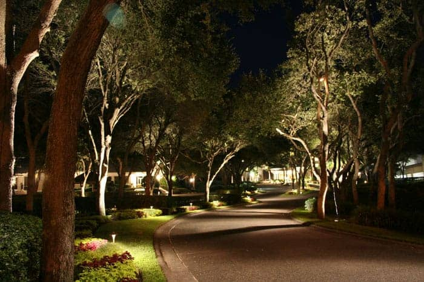
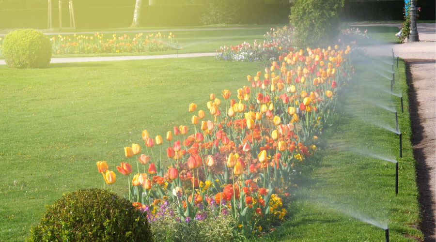

Smart Park Technologies

Smart Lighting
Energy-efficient lights automatically adjust brightness based on movement and daylight conditions.

Smart Irrigation
Automated watering systems reduce water waste and maintain healthy green spaces.

Environmental Sensors
Sensors monitor air quality, weather, and park conditions in real time.